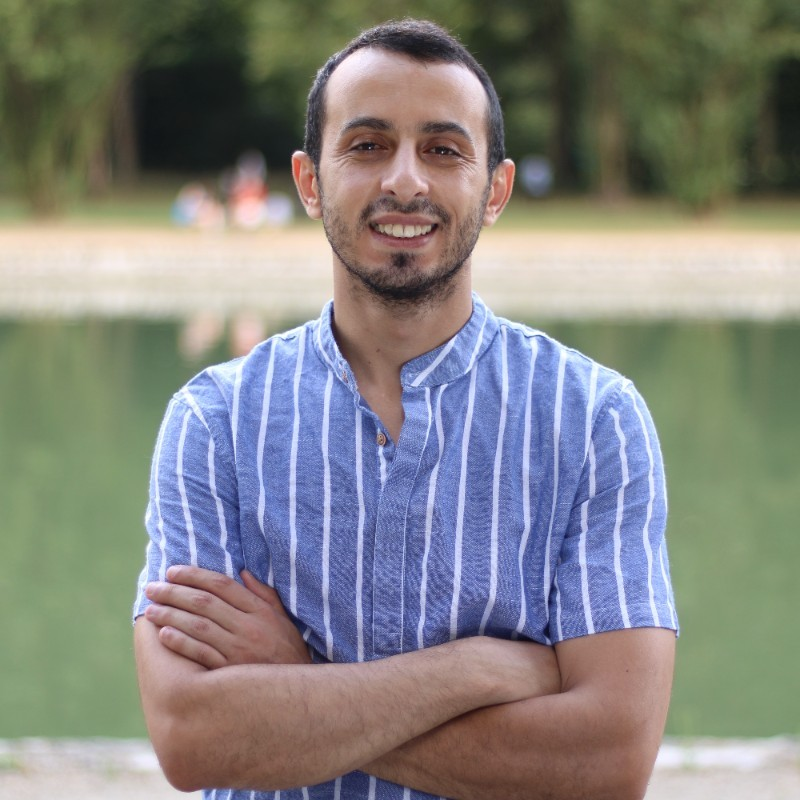

Houssem Balti
Senior Full-Stack Developer & Tech Lead · Angular · Node.js
Senior developer with 9+ years of experience building and scaling web platforms with Angular and Node.js (NestJS), on Azure and Kubernetes. I work with large organisations (SNCF Réseau, Netatmo, Camptocamp, Domifa) on complex products: architecture, delivery, code quality and team mentoring.
- 📍 Île-de-France, France
- 💼 Freelance · open to missions
- 🗣 French · English
Experience
-
Web Developer – Angular & Azure · Netatmo
High-tech / Smart home
- Integrated the new screens of the Home + Control application.
- Orchestrated and coordinated developments for the new Essential Thermostat range.
- Redesigned, industrialised and took ownership of the Terraform/Azure infrastructure.
- Migrated applications and carried out security audits on web applications.
- Angular
- Azure
- Terraform
- API development
-
Angular / Node Developer · SNCF Réseau – DGNUM
Transport · Project STR-SDR “LAMARR”
Internal Angular / NestJS application used to plan track-renewal works, with a calendar interface connected to business systems and strong requirements on data reliability and readability.
- Key role in an Agile team (4 developers, PO, business experts), contributing to technical decisions and prioritisation.
- Designed complex features (planning screens, calendar visualisation) with a focus on performance and ergonomics.
- Led the Angular migration: component adaptation, breaking changes, secure rollout.
- Industrialised deliveries with Jenkins and deployment on Microsoft Azure.
- Continuous quality improvement: refactoring, code reviews, technical-debt reduction, higher unit-test coverage.
- Angular
- NestJS
- PostgreSQL
- Azure
- d3.js
- Jenkins
-
Full-Stack Developer – Node.js | Angular | AI · Domifa
Public sector
- Integrated the French State design system (DSFR) and brought interfaces into RGAA accessibility compliance.
- Built complex features with product teams, focusing on maintainability, scalability and performance.
- Fixed critical bugs and security vulnerabilities; introduced code reviews, standards and refactoring.
- Designed an LLM-assisted workflow to fix RGAA issues, combining Axe and Lighthouse analysis with contextual recommendations for Angular components, integrated into code review and CI.
- Implemented endpoints for beneficiary management, appointment booking and parcel tracking.
- Angular
- NestJS
- Node.js
- Docker
- DSFR
- LLM
-
Node.js | Angular | Kubernetes Developer · Camptocamp
Civil security · NexSIS project (Ministry of the Interior)
Distributed microservices architecture with Node.js (NestJS), PostgreSQL and Angular, using RabbitMQ for event-driven inter-service communication. Scrum team of 5 developers.
- Major contribution to the design and evolution of a microservices architecture based on CQRS, Event Sourcing and Domain-Driven Design.
- Built NestJS backend services with real-time event-driven flows; optimised RabbitMQ exchanges for reliability and decoupling.
- Designed and optimised high-performance APIs (response times, load handling).
- Took part in architecture decisions and technical design sessions; built Angular components with UX teams.
- Incident investigation and production fixes; DevOps with Docker, Kubernetes and GitLab CI.
- Raised team skills through peer reviews and best-practice sharing.
- NestJS
- Angular
- RabbitMQ
- PostgreSQL
- Kubernetes
- CQRS
-
Full-Stack Developer – Angular | Django | Docker · SNCF Réseau
Transport · NOGEOS
Web application analysing the dynamic behaviour of trains on track, used for rail-geometry maintenance. A platform to configure, run and analyse simulations built on Vampire and Simpack.
- Angular frontend, Python Django backend, PostgreSQL database.
- Track-geometry data processing, simulation orchestration, visualisation of results (accelerations, wheel-rail forces).
- Built a dedicated tool for defect studies (Nall/Dall) and user file management.
- Production deployment on Microsoft Azure and maintenance of an on-premise server for intensive computing.
- Angular
- TypeScript
- Django
- Python
- Azure
-
Angular | CodeIgniter | PL/SQL Developer · Adoma (CDC Habitat group)
Public sector
- Independently maintained and evolved a critical beneficiary-tracking application, improving stability and maintainability.
- Designed Talend data-integration flows ensuring consistent data from multiple sources.
- Reworked the data model for BI usage (QlikView) and business steering.
- Built a backend API for mobile usage; contributed to modernising the information system in an Agile environment.
- Angular
- CodeIgniter
- MySQL
- PL/SQL
- Talend
-
Full-Stack Developer – Angular | Node.js | MongoDB · Parrot Faurecia Automotive (Faurecia Clarion)
Automotive
- Built an internal tool to track and analyse electronic-component supply (cost, quality, supplier lead times).
- Full-stack application centralising supplier data, with KPIs, advanced reporting and report generation.
- Robust backend APIs with Node.js / NestJS; Angular frontend; data visualisation with D3.js and Chart.js.
- Angular
- Node.js
- NestJS
- MongoDB
- D3.js
- Chart.js
-
Full-Stack Developer – React.js | Symfony | PostgreSQL · Cdiscount
E-commerce · C’Diffusion
- Internal production-incident management app used for real-time tracking and team coordination.
- React interface for the incident lifecycle (creation, qualification, follow-up, resolution).
- REST APIs with Django REST Framework, webhooks to broadcast incident events, PostgreSQL modelling and query optimisation.
- Participated in deployment and operations. See the project →
- React.js
- Symfony
- PostgreSQL
- Azure AD
Skills
Frontend
- Angular
- TypeScript
- RxJS
- React.js
- d3.js
- Chart.js
- DSFR / RGAA
Backend
- Node.js
- NestJS
- Python / Django
- REST APIs
- CQRS / Event Sourcing
- DDD
- RabbitMQ
Data
- PostgreSQL
- MongoDB
- MySQL
- Talend
Cloud & DevOps
- Azure
- Terraform
- Kubernetes
- Docker
- GitLab CI
- Jenkins
Leadership
- Tech lead
- Code reviews
- Architecture
- Agile / Scrum
- Mentoring
Client reviews
« Houssem a fortement augmenté la couverture en tests unitaires au fur et à mesure de ses développements. Il s'est adapté rapidement aux spécificités techniques de l'application [...]. Il s'est montré autonome tout en restant un team-player. Je le recommande fortement aussi bien pour ses capacités techniques que ses soft skills. »
« Il s'est parfaitement intégré dans nos équipes en contribuant efficacement aux développements d'un produit complexe et stratégique pour les sapeurs-pompiers. Je recommande ses compétences Angular et Node, ainsi que sa bonne humeur ! »
« Houssem a intégré notre équipe et s'est rapidement adapté à notre fonctionnement. [...] Son engagement et son sens du collectif ont été particulièrement appréciés. »